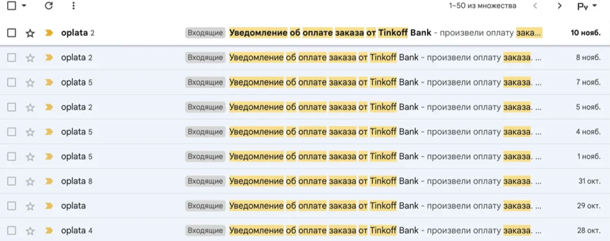
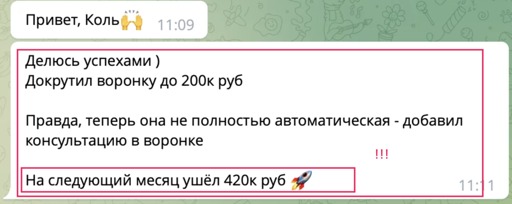

Этот кейс будет полезен для всех, кто желает продавать клуб по подписке или доступ к инфопродуктам по подписке на холодном трафике без созвонов и живых запусков.
Кейс: Клуб для маркетологов
Как запуск клуба для маркетологов по автоматизированной воронке принес 680 000 ₽ за 2 месяца без вебинаров и созвонов.
А также без:
- ✅ Без созвонов и диагностик.
- ✅ Без медийности и сотен рилсов
- ✅ Без отдела продаж.
- ✅ Без ИИ
Всё, что мы использовали - это текстовая воронка, проверенная на десятках наших клиентов.
Какие результаты?
Так что за текстовая воронка?
По сути - это 1-2 голых информационных лендингов с подробным описанием преимуществ продукта.
"Но ведь сейчас у сайтов плохая конверсия и тексты вообще никто не читает!"
вот доказательства обратного: скрин с почты нашего клиента из этого кейса. Каждая оплата на скрине ниже - это оплата на сумму $100 (на тот момент 10 000 рублей)
И таких оплат мы получили 68 за два месяца.
Откуда такая результативность?
Мы ответим - это не просто тексты.
Мы делали их по структуре создания нишевого авторитета. Что нужно было сделать:
- • вызвать доверие до прочтения текста до конца и получить авторитетность в глазах клиента, даже если эксперт не имеет медийности
- • Удержать внимание от первой секунды рекламы до момента оплаты
- • Донести ценность продукта
- • получать стабильный поток лидов без сложных схем
Наши конверсионные воронки действительно "взламывают" рынок. Вот отзыв клиента.
Как мы реализовали эту воронку?
Трафик ведется на подписную страницу с помощью таргетированной рекламы, подписчиков инстаграма и органического охвата, где мы давали аудитории доступ в телеграм-канал
После начинаются продажи основного, дорогого продукта.
Делаются они в таком стиле: 7 дней подписчики получали "прогревочные письма". Затем - серию продающих писем. Как правило - тоже в течении 7 дней.
И эта серия на 2 недели - продает продукты даже с чеком в полторы тысячи долларов США.
Это полностью автоматическая система
Никаких вебинаров.
Никаких сториз с "успешным успехом".
И уж тем более- никаких созвонов и диагностик.
А что насчет контент-маркетинга?
Наш клиент не делал никаких медиаматериалов с рассчётом на органический охват или вирусность. Его страница не выглядела, как страница эксперта.
Максимум - иногда он делал видео на Ютюбе.
Причем это простые видео, без монтажа и дорогого продакшена.
Готовы получить такие же результаты?
Давайте обсудим, как мы можем помочь вашему бизнесу
НАЧАТЬ СОТРУДНИЧЕСТВО